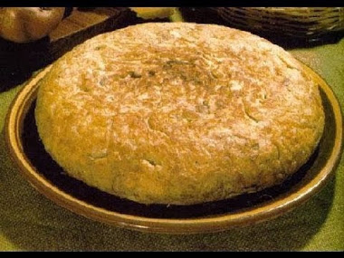

chachama
1 barra de margarina
1 taza de azúcar
3 huevos
1 taza de harina de maíz
1 cucharadita de polvo para hornear
1 o 2 pimientas gordas
1/2 taza de queso rallado
1/2 taza de crema
Precaliente el horno a 350 grados F
Se bate la margarina y el azúcar en un tazón grande con una batidora eléctrica a velocidad media hasta que esté suave y esponjoso
Añadir uno por uno los huevos y continuamos batiendo, y luego agregamos la harina de maíz, el polvo de hornear y la pimienta y batimos todo hasta que quede bien uniforme
Seguidamente le agregamos el queso y la crema, y se mezcla todo
Vertemos la masa en un recipiente para hornear cuadrado de 8 pulgadas, y llevamos directamente al horno y lo dejamos hornear por aproximadamente 40 minutos o hasta que al insertar un palillo en el centro, éste salga limpio
Dejar enfriar completamente el pan antes de cortarlo en trocitos y servirlo, con un delicioso Cafecito